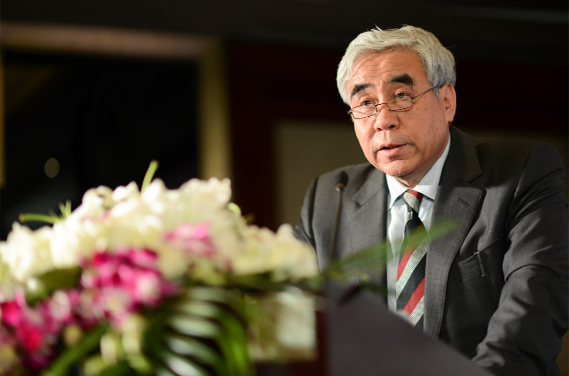

患者关爱
多发性骨髓瘤患者心理干预

（2013年12月2日，北京）中国癌症基金会在西安杨森制药有限公司的大力支持下，开展了万珂®患者援助项目，并下设万珂®项目办公室负责具体管理项目。万珂®患者援助项目的口号为“万千关爱，生命延伸”，其目的是为低收入的多发性骨髓瘤患者提供万珂®药品援助，减轻多发性骨髓瘤患者及其家庭的经济负担。目前，该项目正在北京、上海和天津的六家医院试运行。
中国癌症基金会副理事长兼秘书长赵平表示：“中国癌症基金会不仅致力于推动中国癌症防控事业的发展，同时也非常关注中国癌症患者治疗情况，相信此次在西安杨森制药有限公司的大力支持下，万珂®患者援助项目一定能够给中国的多发性骨髓瘤患者以切实的帮助，避免患者因病致贫，在最大程度上减少患者因无法负担药品费用而不得不放弃治疗的情况。”
万珂®患者援助项目现已在北京大学人民医院、北京协和医院、首都医科大学附属北京朝阳医院、上海长征医院、上海交通大学医学院附属瑞金医院和中国医学科学院血液病医院开展。第一位患者已于2013年10月18日成功接受万珂®药品援助。未来，项目计划扩展至全国18个城市的37家医院。凡符合项目规定的医学及经济标准的中国大陆地区的多发性骨髓瘤患者均可申请参加万珂®患者援助项目。